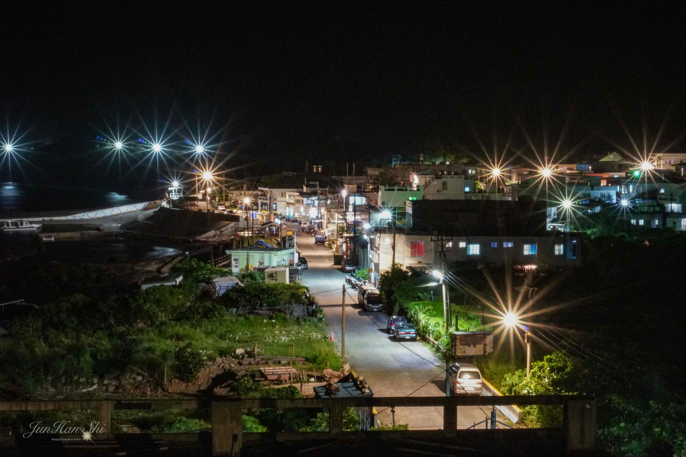
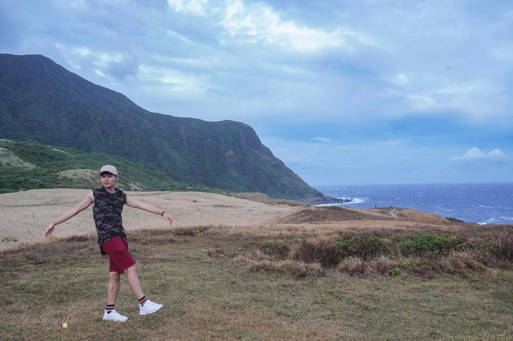
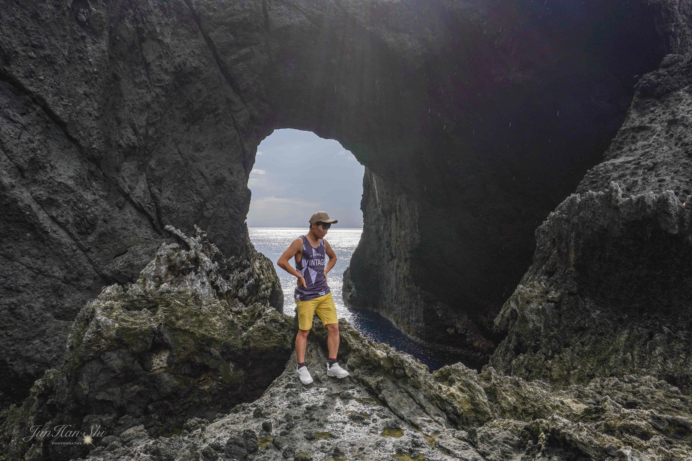
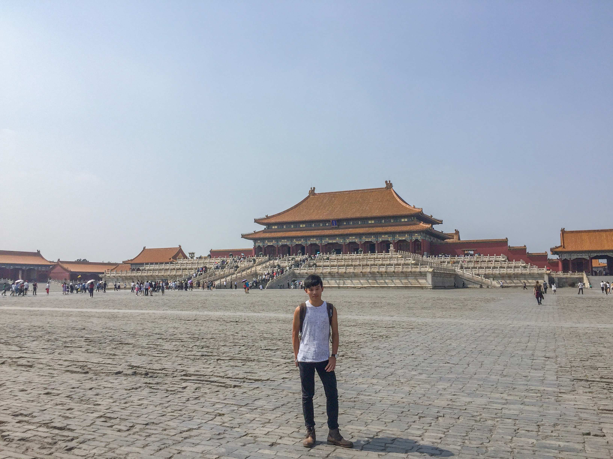
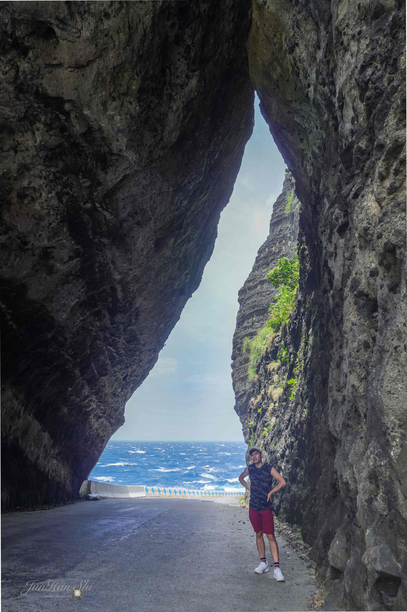
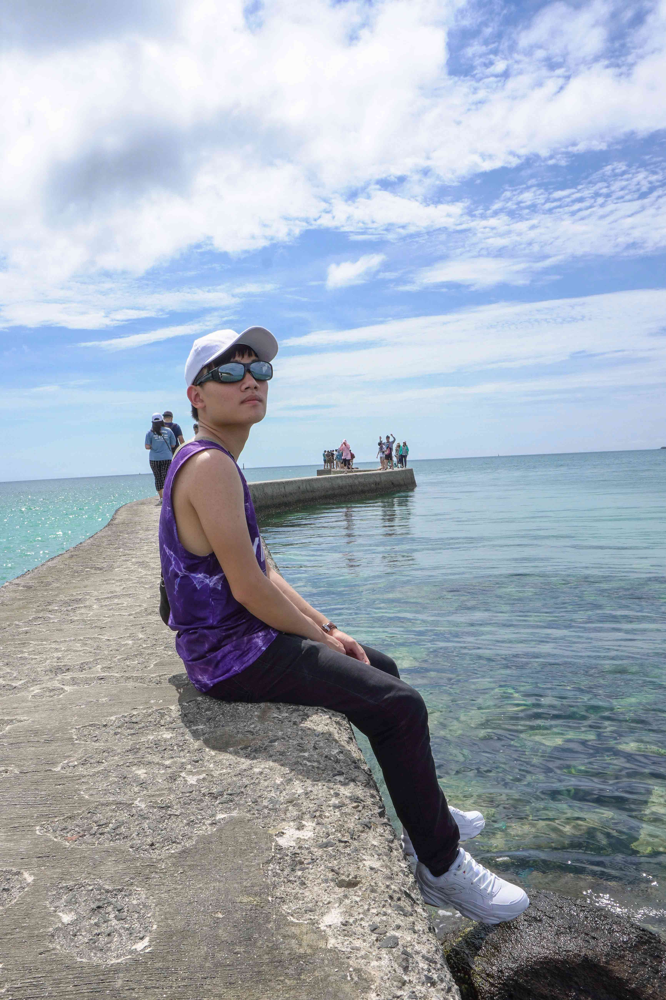
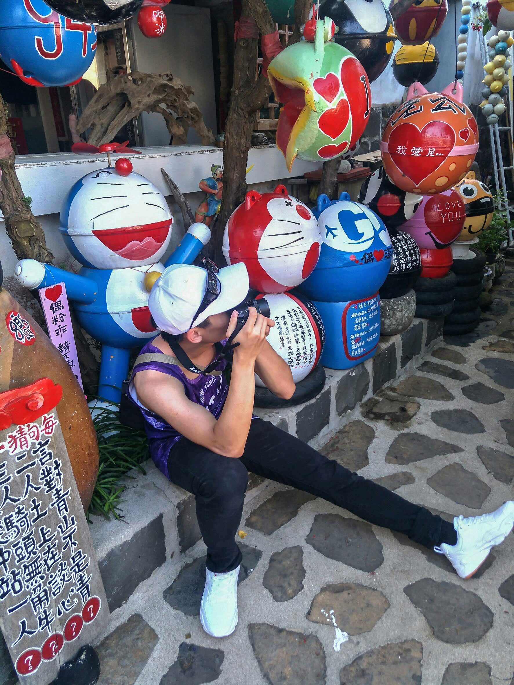

自我介紹
Hi、Hello、大家好！我是施鈞瀚
英文名字：Jin
生日：89/06/21
星座：雙子座
血型：A型
個性：沈默、隨和
社團活動
高一：攝影社
高二：吉他社
高三： 籃球社
科際接力
籃球社
科際接力
大ㄧ：攝影社
大二： 系學會
系學會
工作經驗
高三：
在補習班打工，負責一堆瑣碎小事，幫忙招生和辦講座，
和發傳單。
大二：
從大二上開始在中壢火車站附近的coco壹番屋打工，
第一次從事餐飲業，一開始對於久站感到不習慣，也遇
到過各式各樣的客人，從中也體會到了服務業的辛勞，
從此更有同理心，懂的更體恤服務生。
興趣＆休閒
| 攝影 | 聽音樂 | 看NBA |
| 旅遊 | 看電影 | 騎車 |
目標
- 能把學過的程式融會貫通
- 多益考到750分以上
- 存夠錢出國
- 拍出很酷的照片
- 找到好工作
大學四年的自我期許
希望能順利畢業，並且多益成績更上層樓，能夠兼顧課業與打工。
也希望能夠有好的機緣找到適合的實習，從中獲益進而銜接未來的工作。
生活紀錄
蘭嶼 |
蘭嶼椰油國小 |
 東清灣夜景 |
 蘭嶼青青草原 |
 蘭嶼情人洞 |
 北京紫禁城 |
|  |  |  |